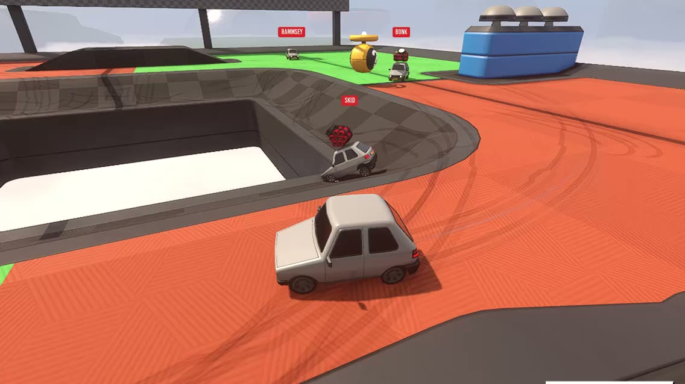

Small
The whole editor is a download of about 300 MB. It installs in moments, opens fast and stays out of your way.
Game engine & editor
LODZERO is a small, fast engine made for artists and programmers alike. Model, texture, light, script and play in one place, then ship your game to Steam.
Sumo Cars, running on LODZERO
Why LODZERO
We built LODZERO to make the games we always wanted to make, the way we always wanted to make them. That meant leaving a lot of baggage behind.
Everything is here. Fast, small and fun.
The whole editor is a download of about 300 MB. It installs in moments, opens fast and stays out of your way.
Sharp, steady frames in the game and in the editor. Change code, a mesh or a light and see it straight away, no waiting.
Every tool is visual, immediate and undoable, so you can try ideas without fear. Model, texture, light and play without ever leaving the editor.
Highlights
Editor
Play runs your real game right inside the editor, menus, HUD and all. Stop, tweak a value or a mesh, and you're back in. Code changes land in the running editor almost instantly.
Multiplayer
Mark a value to sync it and a method to call it across the network, and you're online. Go server-authoritative so results are consistent and cheat-resistant, or client-authoritative so each player simulates their own objects. Either way, every player's own actions feel instant. Test a whole match with several players inside the editor.
Replays
Instant replays and killcams are part of the engine. Show the last few seconds from any camera, slow it down, cut back to the action. They're light enough to leave on all the time.
Time travel
Every time you press Play, the session is recorded. Scrub back to the moment something went wrong, step through it frame by frame, and grab the controls from right there. Bugs that happen once can be watched again and again.
Modelling
Block out and finish geometry where it lives, with the tools you reach for every day. Collision follows the mesh as you work: cut a hole and players can fall through it.
Hotspotting
Model a shape and its faces find the right part of a hotspot sheet on their own: trims, panels and bevels land where they belong, at a consistent texel density. Level art that looks finished while you're still blocking it out.
AI modelling Experimental
Describe a model and an AI agent builds it with the editor's own modelling tools: it blocks it out, checks its renders and refines. The result is ordinary, editable geometry, and it can change models you made too.
Texture graphs Preview
A full node-based texture generator inside the editor: noises, patterns, filters, blends and PBR outputs, with a live 3D preview. Graphs can texture a mesh from its own shape, and textures stay linked to the graph that made them.
Realtime GI Preview
Move the sun, a lamp or a wall and the bounce light follows at once, with no bake. Ray-traced probes fill the world and a per-pixel final gather keeps corners and contact shading crisp.
Live lighting
Prefer baked? Move a wall and the lightmaps rebake in the background while you keep working. The GPU baker uses hardware ray tracing and denoising, with reflection probes that fit their rooms.
Game UI
Author HUDs and menus as widgets, then preview every state and animation without starting the game. The code that connects them to your game is generated for you.
Made with LODZERO

Party car sumo for up to six players online. Bump, blast and knock your friends off floating arenas.
On Steam as Random Racing →A tiny pet that lives on your desktop. Care for it while you work, and it grows into its own little character.
Wishlist on Steam →Everything else
LODZERO is in early access on Windows. Tell us what you're making and we'll get you set up. Studios, publishers and press are welcome too.